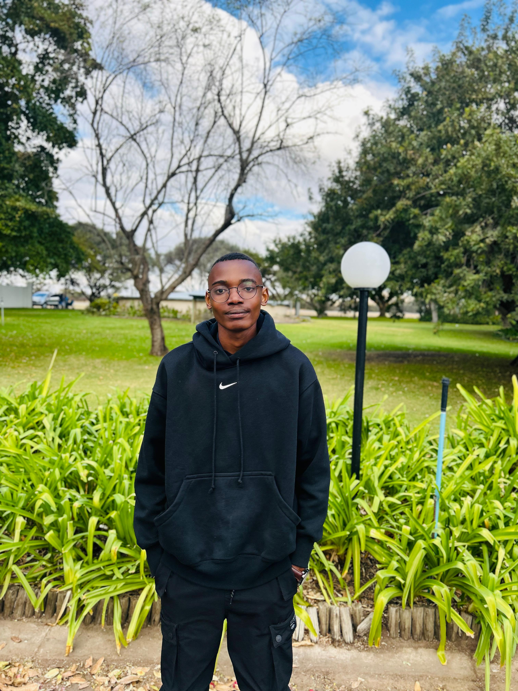

IT Support • Helpdesk • Junior Systems Administration
Hi, I'm Neo Kale
I'm an IT graduate building hands-on skills in troubleshooting, Windows support, Active Directory, networking fundamentals, and systems administration through practical labs and documented projects.
About Me
I'm an IT graduate based in South Africa, focused on building a strong foundation for entry-level roles in IT Support, Helpdesk, Junior Systems Administration, Infrastructure Support, and ICT Support.
My current focus is on practical troubleshooting, Windows administration, networking fundamentals, Active Directory, remote support, and documenting real-world support scenarios through hands-on lab work in VirtualBox.
Instead of relying only on theory, I’m building and documenting labs that simulate common support and systems administration issues such as account lockouts, printer problems, remote connection failures, sound device issues, and network connectivity troubleshooting.
I’m intentionally building proof of work through GitHub, LinkedIn, and practical lab documentation so recruiters can see how I think, troubleshoot, and solve technical problems step by step.
Core Skills
- IT Troubleshooting
- Windows 10 / Windows Server
- Active Directory (AD DS)
- Group Policy Basics
- Networking Fundamentals
Tools & Platforms
- VirtualBox
- Git & GitHub
- Command Prompt / ipconfig
- services.msc
- Active Directory Users and Computers
How I Work
- I troubleshoot systematically instead of guessing
- I document what broke, how I tested, and how I fixed it
- I focus on practical proof of work over empty claims
- I build consistently and improve through iteration
- I care about becoming job-ready, not just course-ready
Featured IT Labs
Active Directory Account Lockout
Simulated a real enterprise support issue where a domain user account became locked after multiple failed sign-in attempts, then diagnosed and restored access using Active Directory Users and Computers.
Remote Support Failure (AnyDesk)
Simulated a remote access issue where AnyDesk could not connect because the service was stopped, then restored remote access by verifying and restarting the service.
Printer Offline Troubleshooting
Simulated a common helpdesk ticket where a printer showed as offline or paused, then restored printing by resuming the queue and reviewing the Print Spooler service.
Additional Projects
Average / GPA Calculator
A web-based calculator that helps students calculate academic averages and receive immediate feedback based on their results.
Student Application Tracker
A CRUD-based web app that manages student applications with validation, structured state updates, and dynamic interface behavior.
More IT Labs Coming
I’m actively expanding this portfolio with more hands-on labs in DNS, DHCP, Windows services, Group Policy, permissions, and systems troubleshooting.
Let's Connect
Open to IT Support, Helpdesk and Junior Systems Administration opportunities
Email: neokale10@gmail.com
GitHub: github.com/neooza1
LinkedIn: Connect with me on LinkedIn